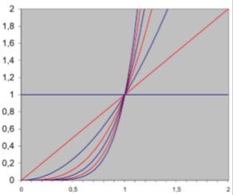

数据的插值与逼近
1. 插值
1.1. 插值问题的描述
1.1.1. 问题的一般形式
- 寻找定义域\(\Omega\subseteq \mathbb R^d\)，值域\(\mathbb R\)上的函数\(f:\Omega\rightarrow\mathbb R\)
-
基函数集合：\(B=\{b_1,\cdots,b_n\}\)，\(b_i:\Omega\rightarrow\mathbb R\)
-
将\(f\)表示为基函数的线性组合
其中，\(f\)由\(\lambda=\begin{pmatrix}\lambda_1\\\vdots\\\lambda_n\end{pmatrix}\)唯一确定
- 函数值\(\{(x_1,y_1), \cdots,(x_n,y_n)\}\)，\((x_i,y_i)\in \mathbb R^d\times\mathbb R\)
- 目标找到\(\lambda\)使得\(f_\lambda(x_i)=y_i\)对所有\(i\)成立
1.1.2. 插值问题应用举例
最简单的光滑曲线曲面建模问题：
- 给定曲线或曲面上的一组点
- 选择一组可张成合适函数空间的基函数
- 光滑基函数
- 任意线性组合也为光滑函数
- 找到一个线性组合能够使得曲线或曲面能插值给定点
1.2. 插值问题的求解
构造线性方程组：
- 在数据点\(x_i\)上计算基函数：
- 写成矩阵形式：
1.2.1. 多项式插值示例
-
使用多项式基\(B=\{1,x,x^2,x^3,\cdots,x^{n-1}\}\)
-
求解线性方程组
\[ \begin{pmatrix} 1&x_1&\cdots&x_1^{n-1}\\ 1&x_2&\cdots&x_2^{n-1}\\ \vdots&\vdots&\ddots&\vdots\\ 1&x_n&\cdots&x_n^{n-1} \end{pmatrix} \begin{pmatrix} \lambda_1\\\lambda_2\\\vdots\\\lambda_n \end{pmatrix} = \begin{pmatrix} y_1\\y_2\\\vdots\\y_n \end{pmatrix} \]
1.2.2. 多项式插值存在的问题
- 系统矩阵稠密
- 依赖于基函数选取，矩阵可能病态，导致难以求解（求逆）
病态问题
-
输入数据的细微变化导致输出（解）的剧烈变化
-
将线性方程看成直线（超平面）
- 当系统病态时，直线编程近似平行
- 求解（即直线求交）变得困难、不精确
-
举例：
-
考虑二元方程组
\(x_1+0.5x_2=1.5\) 和 \(0.667x_1+0.333x_2=1\)
解为\((1,1)\)
-
对第二个方程右边项扰动0.001
\(x_1+0.5x_2=1.5\) 和 \(0.667x_1+0.333x_2=0.999\)
解为\((0,3)\)
-
对矩阵系数进行扰动
\(x_1+0.5x_2=1.5\) 和 \(0.667x_1+0.334x_2=0.999\)
解为\((2,-1)\)
-
1.2.3. 矩阵条件数
- 等于最大特征值和最小特征值之间的比例
- 条件数大意味着基元之间有太多相关性
考虑多项式插值
- 多项式插值问题是病态的
- 对于等距分布的数据点\(x_i\)，范德蒙矩阵的条件数随着数据点数\(n\)呈指数级增长（多项式最高次数为\(n-1\)）
原因：
-
幂（单项式）函数基

- 幂函数之间差别随次数增加而减小
- 不同幂函数之间唯一差别为增长速度
1.2.4. 函数互相抵消
-
对于单项式函数基，从左到右，首先由常函数1主宰，接着\(x\)增长最快，接着\(x^2\)增长最快，接着\(x^3\)增长最快...
-
好的基函数一般需要系数交替以达到函数的互相抵消
解决方法：
- 使用正交多项式基
- 正交基获得方法：Gram-Schmidt正交化
1.3. 拉格朗日插值方法
拉格朗日插值方法避免求解线性方程组
1.3.1. 拉格朗日插值的一般形式
-
构造插值问题的通用解
-
给定\(n+1\)个点\(\{(x_0,y_0),\cdots,(x_n,y_n) \}\)，寻找一组次数为\(n\)的多项式基函数\(l_i\)使得
\[ l_i(x_j)=\begin{cases} 1,&若i=j\\ 0,&若i\neq j \end{cases} \]
-
-
插值问题的解为
\[ P(x)=y_0l_0(x)+y_1l_1(x)+\cdots+y_nl_n(x)=\sum\limits_{i=0}^ny_il_i(x) \]
1.3.2. 拉格朗日多项式的计算
-
\(n\)阶多项式，且有以下\(n\)个根
\[ x_0,x_1,x_2,\cdots,x_{i-1},x_{i+1}\cdots,x_n \] -
可表示为
\[ \begin{align} l_i(x)&=C_i(x-x_0)(x-x_1)\cdots(x-x_{i-1})(x-x_{i+1})\cdots(x-x_n)\\ &=C_i\prod_{j\neq i}(x-x_j) \end{align} \] -
由\(l_i(x_i)=1\)，可得
\[ 1=C_i\prod_{j\neq i}(x_i-x_j)\Rightarrow C_i=\dfrac{1}{\prod_{j\neq i}(x_i-x_j)} \] -
最终的多项式基函数为
\[ l_i(x)=\dfrac{\prod_{j\neq i}(x-x_j)}{\prod_{j\neq i}(x_i-x_j)} \]多项式\(l_i(x)\)称为拉格朗日多项式
1.3.3. 拉格朗日插值 vs 单项式基插值
事实上，给定同一组输入点，利用拉格朗日多项式和利用范德蒙矩阵（单项式基）进行插值所得到的解完全相同
- 假设解不同。记两个解的差别多项式为\(R_n\)，\(R_n\)阶数至多为\(n\)
- 那么\(R_n(x_i)=0\)，\(i=0,1,\cdots,n\)，\(x_i\)为不同插值点。因此\(R_n\)是有\(n+1\)个根的\(n\)阶多项式，因此\(R_n=0\)
1.3.4. 多项式插值分析
- 多项式插值不稳定
- 控制点的微小变化可导致完全不同的结果
- 振荡现象：多项式随着插值点数（可以是细微的）增加而摆动
解决方法：
- 使用更好的基函数做插值，例如：分片多项式
2. 逼近
2.1. 动机
2.1.1. 使用逼近的原因
- 数据点含噪声（采样）
- 更紧凑的表达
- 计算简单
2.1.2. 常用的逼近函数
- 多项式
- 有理函数（多项式商）
- 三角函数
2.2. 多项式逼近
2.2.1. 万能逼近定理
又叫Weierstrass定理：
令\(f\)为闭区间\([a,b]\)上任意连续函数，则对任意给定\(\varepsilon\)，存在\(n\)和多项式\(P_n\)使得 $$ |f(x)-P_n(x)|<\varepsilon,\forall x\in[a,b] $$ Weierstrass只证明了存在性，而未给出多项式
2.2.2. Bernstein多项式逼近
Bernstein多项式构造定理
对\([0,1]\)区间上任意连续函数\(f(x)\)和任意正整数\(n\)，以下不等式对所有\(x\in[0,1]\)成立 $$ |f(x)-B_n(f,x)|<\dfrac{9}{4}m_{f,n} $$
- \(m_{f,n}=\mathop {\mathrm {lower\ upper\ bound}}\limits_{y_1,y_2\in[0,1]且|y_1-y_2|<\frac{1}{\sqrt{n}}}|f(y_1)-f(y_2)|\)
- \(B_n(f,x)=\sum_{j=0}^nf(x_j)b_{n,j}(x)\)，其中\(x_j\)为\([0,1]\)上等距采样点
- \(b_{n,j}=\begin{pmatrix}n\\j\end{pmatrix}x^j(1-x)^{n-j}\)为Bernstein多项式
Bernstein多项式逼近特点
- 逼近结果优秀，但需要高阶
- 计算昂贵
- 容易带来误差
2.3. 最小二乘逼近
2.3.1. 逼近问题
- 给定一组线性无关的连续函数集合\(B=\{b_1,\cdots,b_n\}\)和一组结点\(\{(x_1,y_1),\cdots,(x_m,y_m)\}\)，其中\(m>n\)
- 在\(B\)张成空间中寻找对结点逼近最好的函数\(f\in\mathrm{span}(B)\)
2.3.2. 最佳逼近的定义
最小二乘逼近 $$ \mathop{\mathrm{argmin}}\limits_{f\in\mathrm{span(B)}} \sum\limits_{j=1}^m(f(x_j)-y_j)^2 $$
其中，\(\pmb \lambda=(\lambda_1,\lambda_2,\cdots,\lambda_n)^T\)，\(\pmb y=(y_1,y_2,\cdots,y_m)^T\)，\(M=\begin{pmatrix}b_1(x_1)&\cdots&b_n(x_1)\\\vdots&\ddots&\vdots\\b_1(x_m)&\cdots&b_n(x_m) \end{pmatrix}\)
2.3.3. 最小二乘解
-
关于\(\pmb\lambda\)的二次多项式
\[ \pmb\lambda^TM^TM\pmb\lambda-2\pmb y^TM\pmb \lambda+\pmb y^T\pmb y \] -
最小解满足
\[ M^TM\pmb\lambda=M^T\pmb y \]